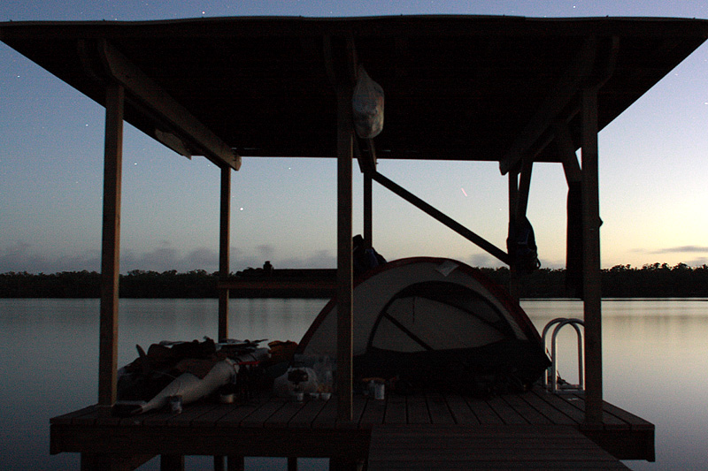

|
EVERGLADES NATIONAL PARK
DECEMBER,
2O11
BIG BIRD FOOTPRINT (EAST CAPE)
SUNRISE (EAST CAPE)
SECOND CAMPSITE (NORTHWEST
POINT)
BEACH (NORTHWEST POINT)
BEACH
(NORTHWEST
POINT)
TINY CONCH (NORTHWEST
POINT)
SUNSET (NORTHWEST
POINT)
SUNSET (NORTHWEST
POINT)
SUNSET (NORTHWEST
POINT)
LONG EXPOSURE - STARS WITH KEY WEST LIGHT POLLUTION (NORTHWEST
POINT)
LONG EXPOSURE - STARS OVER CAMPFIRE (NORTHWEST
POINT)
CALM SEA AT NORTHWEST POINT JUST BEFORE SUNRISE DEPARTURE
MANGROVE TREES IN OYSTER BAY
OYSTER BAY SUNSET

LONG EXPOSURE (SOUTH JOE RIVER CHICKEE)
"STAND BY YOUR MANATEE"
|